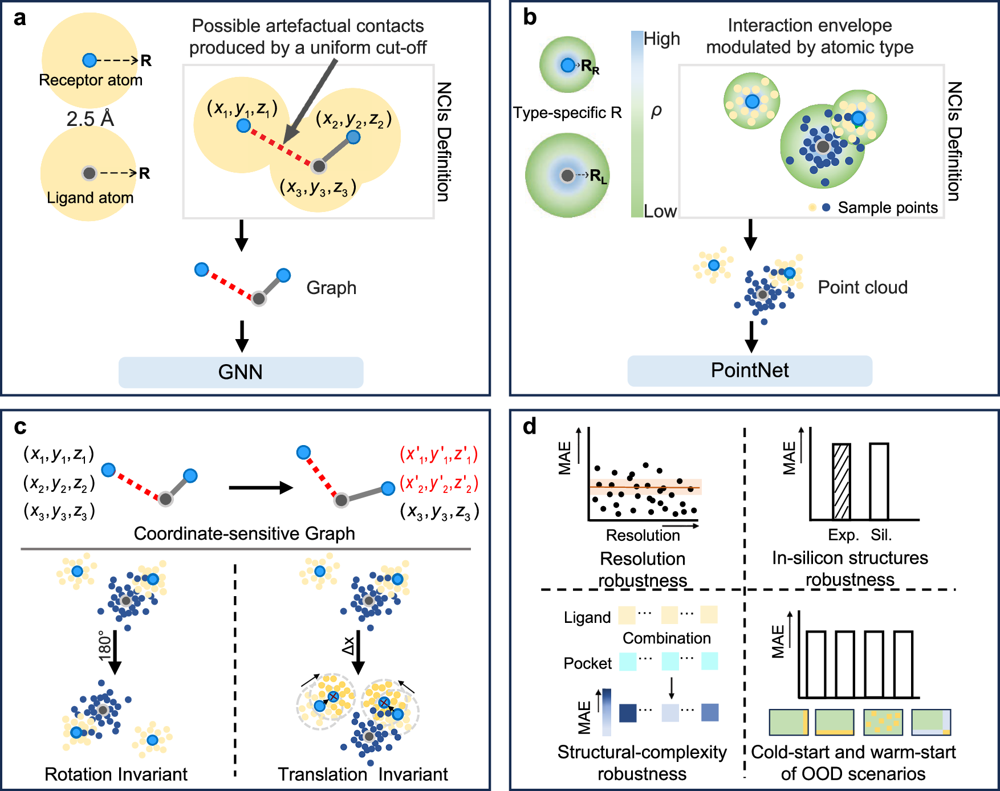
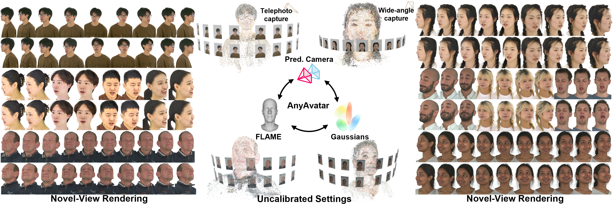
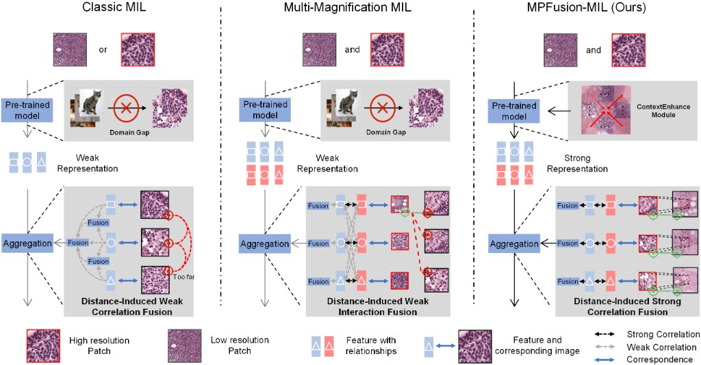
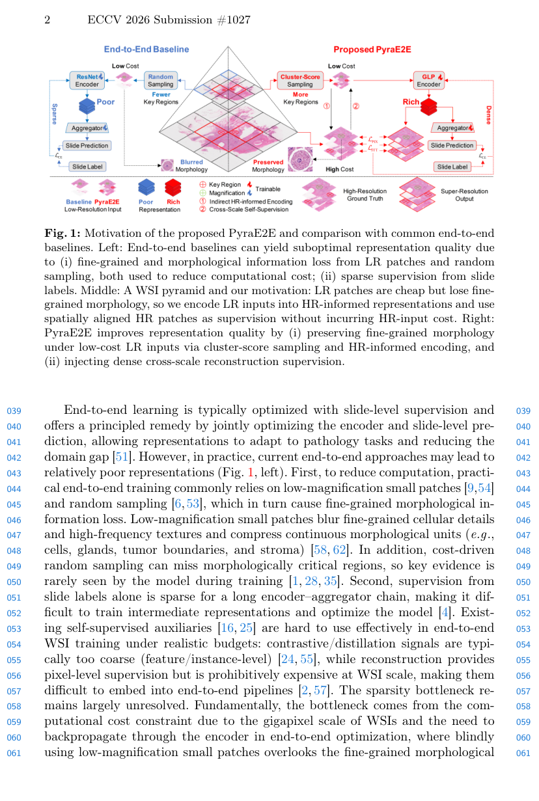
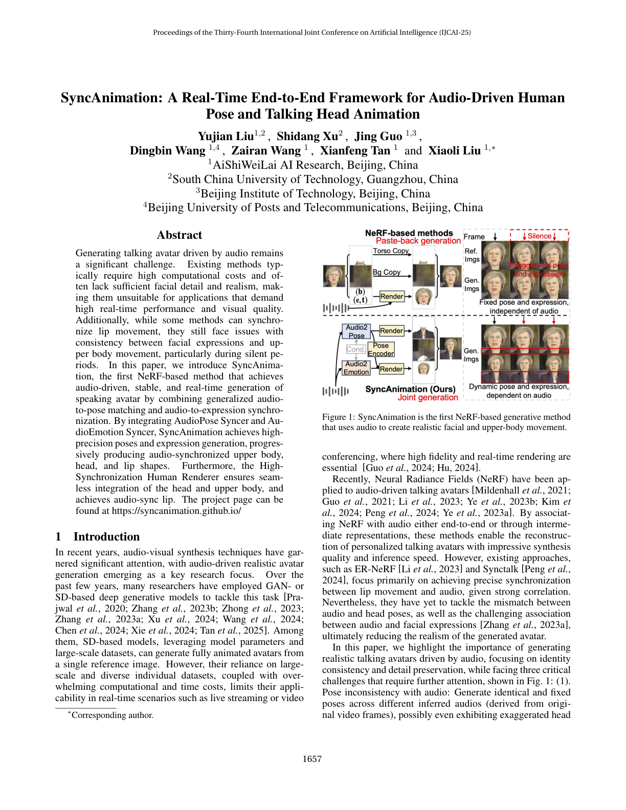
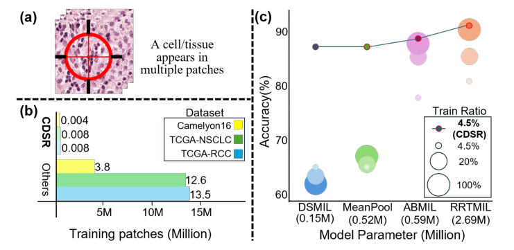
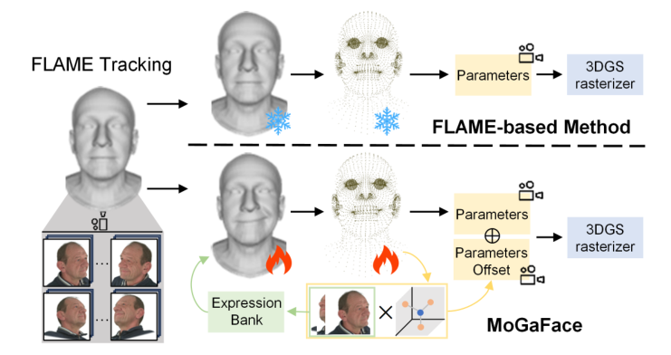
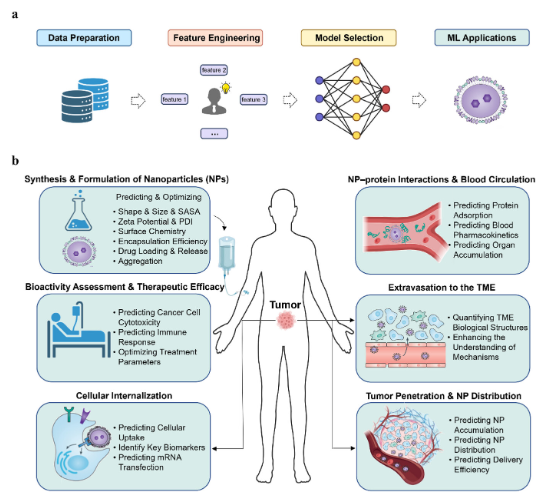
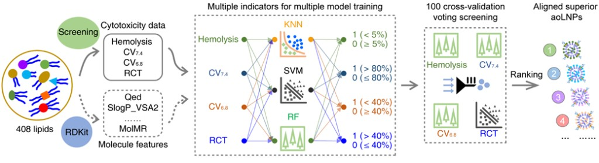
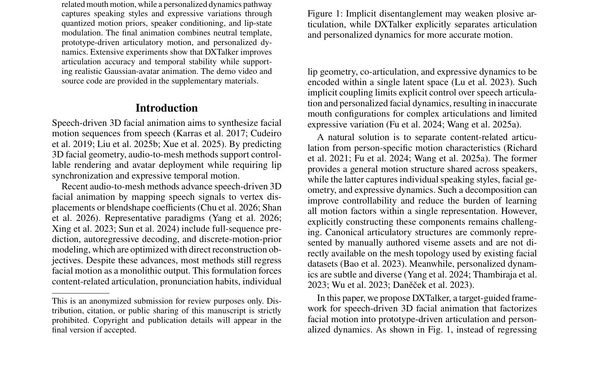

I am Yujian Liu, from China. I am a master's graduate in Biomedical Engineering from South China University of Technology, advised by Prof. Shidang Xu. I also work as an algorithm intern at Beijing Yuaiweiwu Technology Co., Ltd. under Dr. Xiaoli Liu.
My research interests include:
- High-fidelity 3D Gaussian avatars and speech-driven facial animation
- Whole slide image (WSI) analysis and computational pathology
- AI for drug discovery, including protein–ligand interaction prediction and molecular generation
I am currently applying to PhD programs for Spring/Fall 2027 admission. Prospective advisors and collaborators are welcome to reach out via email.
🎓 Education
- 2023.09 – 2026.06, South China University of Technology, Guangzhou, China — M.S. in Biomedical Engineering (GPA: 87.64/100)
Awards: National Scholarship for Graduate Students - 2019.09 – 2023.06, Central South University of Forestry and Technology, Changsha, China — B.S. in Communication Engineering (GPA: 88.88/100, Rank 8/106)
Awards: Postgraduate recommendation; Provincial Outstanding Graduate; First Prize Scholarship
💼 Experience
- 2024.07 – Present, Algorithm Intern, Beijing Yuaiweiwu Technology Co., Ltd., Beijing, China
Supervised by Dr. Xiaoli Liu. - 2026.07 – Present, Research Assistant, South China University of Technology, Guangzhou, China
Supervised by Prof. Shidang Xu.
🔬 Research Projects


Reconstructs animatable 3D Gaussian head avatars from uncalibrated multi-view images by jointly refining camera poses, FLAME geometry, and Gaussian appearance.

A multi-magnification MIL model that keeps spatial correspondence across scales and injects localized high-resolution evidence into aligned coarse regions.

An end-to-end WSI framework that turns the slide resolution pyramid into cross-scale super-resolution supervision, so the encoder and aggregator can be trained together.


Shows that a small set of informative high-resolution patches, selected and reconstructed through cascaded dual-scale learning, is sufficient for robust WSI representation.


Reviews how machine learning can guide nanoparticle synthesis and formulation, and help model nano–bio interactions along the cancer drug-delivery pipeline, from circulation and tumor extravasation to penetration and cellular uptake.

Uses machine-learning-accelerated screening to discover activable oncolytic ionizable lipid nanoparticles for selective cancer therapy.

Factorizes speech-driven 3D facial animation into shared articulatory prototypes and identity-specific dynamics for accurate lip sync and expressive motion.
🏆 Awards
- 2022, Honorable Mention, Mathematical Contest in Modeling/Interdisciplinary Contest in Modeling
- 2022, National Second Prize, Chinese Collegiate Computing Competition
- 2022, National Third Prize, China College Student Service Outsourcing Innovation and Entrepreneurship Competition
- 2022, National Third Prize, National College Student Market Survey and Analysis Competition
- 2021, Meritorious Winner, Mathematical Contest in Modeling/Interdisciplinary Contest in Modeling
- 2021, National Second Prize, Contemporary Undergraduate Mathematical Contest in Modeling